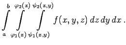

Inhalt Index DeskTop Bronstein

 Integralrechnung Mehrfachintegrale Dreifachintegral Berechnung des Dreifachintegrals
Integralrechnung Mehrfachintegrale Dreifachintegral Berechnung des Dreifachintegrals


Das Integrationsgebiet, das hier als Volumen V aufgefaßt werden kann, teilt man mit Hilfe von Koordinatenflächen, die in diesem Falle Ebenen sind, in infinitesimale Parallelepipede ein (s. Abbildung).
Dabei ist wie im Falle des Doppelintegrals zu bachten, daß der Durchmesser der Elementarzelle beim Grenzübergang gegen Null geht. Auf die Zerlegung folgt die Summation aller Differentiale , beginnend bei allen Parallelepipeden längs einer vertikalen Säule, d.h. Summation über z, danach aller Säulen längs jeder der vertikalen Schichten, d.h. Summation über y, und schließlich aller Schichten, d.h. Summation über  . Die analytische Formulierung lautet:
. Die analytische Formulierung lautet:
| = | |||
| = |  | (8.143a) |
| (8.143b) |
genügen.
| Beispiel |
|
Berechnung des Integrals für eine Pyramide, die von den Koordinatenebenen und der Ebene x+y+z = 1 begrenzt wird: |